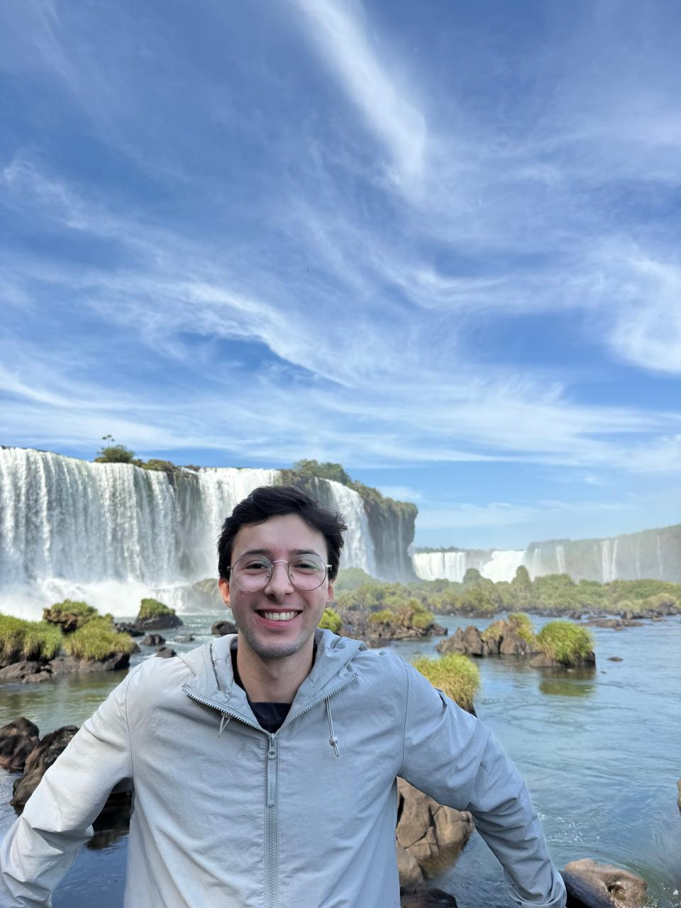
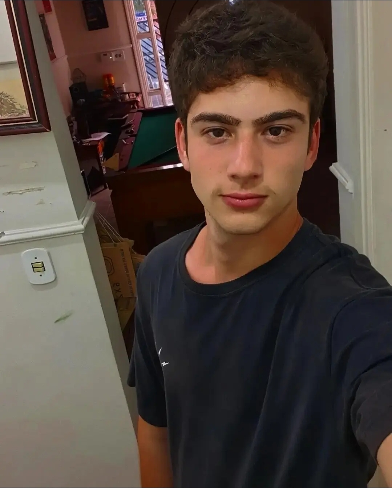

Um pouco da nossa história
O legado deixado por quem ajudou a construir a Magnatas.
Como tudo começou
A republica foi criada em 2005, pelos nossos fundadores Dink, Geninho, Bruno.
O nome foi pensado para reprsentar os estudantes de engenharia que sao ricos de problemas, e a localizacao da casa foi escolhida com base na distancia, qualidade da casa e do bairro e claro o preco acessivel do aluguel.
O que dizem nossos ex-moradores
"Morar em república é uma experiência que acredito que todo estudante universitário deveria viver. A universidade vai muito além de frequentar aulas, fazer provas e conquistar um diploma. Estar na universidade também significa mudar de ambiente, conhecer novas pessoas, amadurecer e, de certa forma, transformar a própria vida. E talvez nenhuma experiência represente isso tão bem quanto dividir uma casa com outras nove pessoas que, à primeira vista, são completos estranhos e que você jamais imaginaria que, algum tempo depois, se tornariam verdadeiros irmãos. É difícil colocar em palavras tudo o que essa experiência representa, porque praticamente todos os dias se tornavam memoráveis de alguma forma. Morar em república é conseguir transformar um dia difícil, uma nota baixa ou uma semana cansativa em uma noite divertida ao lado dos amigos. É chegar em casa sabendo que sempre haverá alguém para conversar, rir, reclamar da vida ou simplesmente fazer companhia. É aprender a dividir espaços, responsabilidades, problemas e conquistas. É descobrir que você não está sozinho. Morar em república é, ao mesmo tempo, acolhedor e desafiador. É aprender a conviver com as diferenças, criar laços improváveis e perceber que, muitas vezes, as melhores lembranças da universidade não acontecem dentro da sala de aula, mas justamente nos momentos mais simples compartilhados com as pessoas que, sem perceber, acabaram se tornando uma família.."

Renan de Paula "Osmose"
Engenharia de Controle e Automacao - Turma 018
Engenharia de Controle e Automacao - Turma 018
Morar em uma república é uma experiência transformadora da vida universitária, pois estabelece o equilíbrio entre a preparação profissional e o crescimento pessoal. Enquanto a faculdade garante as hard skills com sua base acadêmica e teórica, a rotina sob o mesmo teto desenvolve soft skills, onde se aprende na prática sobre empatia, inteligência emocional, escuta e negociação. Conviver com amigos de todos os cantos expande horizontes e ensina a valorizar a diversidade no cotidiano. Além disso, permite desenvolver um grupo de estudos para encarar as madrugadas de estudo para as provas, formando uma rede de contatos e networking para o futuro. Entre conversas espontâneas e desafios compartilhados, essa vivência proporciona momentos únicos que transformam simples colegas de casa em uma segunda família e em amigos para a vida toda.
Matheus Armelin "Semente"
Engenharia de Controle e Automacao - Turma 018
Engenharia de Controle e Automacao - Turma 018
Morar na mag foi uma experiência única em minha vida, fazer parte de uma casa com várias pessoas diferentes me deu uma nova perspectiva sobre amizades e responsabilidades, além sobre o valor de coisas que nem imaginava que sentia falta (comida da minha mãe e aspirador de pó kkkk). Acredito que toda pessoa deve ter a experiência de morar em uma república para aprender sobre coisas que só a vida ensina. Tenho muita saudade de tudo oq já vive mas feliz dos frutos que a república esta me fazendo colher. Agradeço a todos os moradores e ex que fazem parte dessa história

Ryan Ramos "Resgate"
Engenharia Ambiental - Turma 018
Engenharia Ambiental - Turma 018